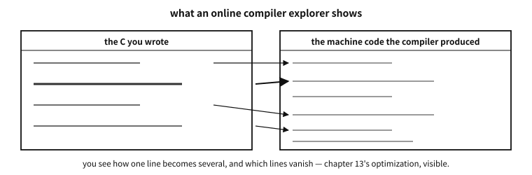
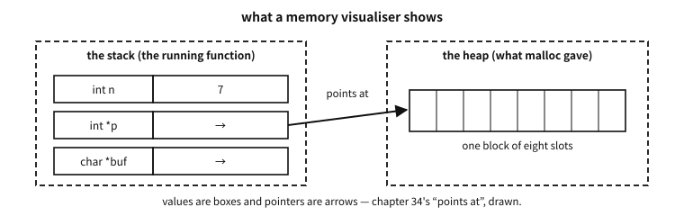

18 Setting up a development environment
What to know first
Looking back
Chapter 17 worked at the command line, asking the compiler for things like -E and -S. These days everything can be done by clicking — so why the command line?
A. Because it is the common ground. Graphical development tools each look different and change every few years, but the sentence cc hello.c -o hello has worked on every platform for half a century. And whatever graphical tool you use, what actually runs underneath its “build” button is exactly these commands — someone who knows what lies underneath does not get lost when switching tools. That is why this book takes the command line as its reference.
The need for this chapter, and its context
By the end of this chapter
The questions this chapter answers
- Is there a reason for having two families of compiler? Life would be less confusing with one.
- When, then, is
-fexec-charsetused? - So is the answer to avoid printing Hangul in examples altogether?
- So should I stop debugging with
printfnow? - With warnings on and sanitizers available, why do bugs still remain?
18.1 Only three things are needed — a compiler, an editor, a terminal#
“Development environment” sounds grand, but C programming needs only three things.
- A compiler — chapter 17’s four runners in one. This book takes the gcc and clang families as its reference (both are free and exist on every major platform).
- A text editor — source code is just a text file (chapter 8), so anything that can write characters will do. Which editor you use is a matter of taste, and this book does not decide it.
- A terminal — the window in which you type commands. Every operating system has one.
The shape of the working day is simple too — edit, compile, run. That three-beat cycle is the basic rhythm of programming, and every example in this book turns on it (readers may of course simply read on the page — as chapter 1 promised, even this chapter’s installation is a demonstration, not homework).
Platform note. Installing a compiler on Windows
This book’s example platform is Windows. Pick one of two routes (or both) — this book’s examples build identically either way.
Route 1 — LLVM clang (recommended). Install the LLVM project’s official Windows distribution. One line in the terminal (PowerShell) is enough:
> winget install LLVM.LLVM(Downloading the installer from llvm.org’s releases page is the same thing.) If clang --version answers with a version number in a new terminal, you are ready. From then on, write clang where this book writes cc:
> clang hello.c -o hello.exe
> .\hello.exe
Hello, world!Route 2 — MinGW-w64 gcc. The Windows port of gcc. Install the package environment MSYS2 (msys2.org), then in its terminal:
$ pacman -S mingw-w64-ucrt-x86_64-gcc
$ gcc --versionA third road — about Visual Studio (MSVC). Microsoft’s own compiler and integrated environment is an excellent choice too, but its command and option spellings differ from this book’s (the gcc/clang family), so it is not covered here. Interested readers can follow Microsoft’s official documentation (learn.microsoft.com/cpp), which guides from installation to the first program in detail.
Q. Is there a reason for having two families of compiler? Life would be less confusing with one.
A. Because competition drives quality — and because for a programmer it is a free way to check their work. Compile the same code with both gcc and clang and it is common for one to catch a warning the other missed. Code that two independent implementations both accept is far more likely to be written to the standard (the contract) — in chapter 13’s terms, evidence from both compilers that you are speaking the standard language rather than a dialect. The examples printed in this book are cross-checked with both compilers.
18.2 If installing is too much — try it straight in a browser#
Getting the three things above is the proper way, but when you want to run one line right now, a browser is enough. Several places compile and run code with no installation, and some of them show what this book could only describe on paper — the optimised machine code, and where a pointer points.
| What | What it offers | Where it helps in this book |
|---|---|---|
Compiler Explorer (godbolt.org) | Source and assembly side by side. Over a thousand C compiler versions | Chapter 14 (optimisation), chapter 17 (compilation), chapter 52 (operators) |
OnlineGDB (onlinegdb.com) | Editing, running and a debugger in the browser | Following this chapter’s debugger section without installing |
Wandbox (wandbox.org), Coliru (coliru.stacked-crooked.com) | Running the same code under several compiler builds | Spotting “works only on my compiler” |
Replit (replit.com) | A workspace with files and a terminal | Examples split across files (chapter 60) |
Python Tutor (C mode, pythontutor.com/c.html) | Steps through execution and draws memory | Chapters 36–46, pointers and memory |
cdecl.org | Puts a complicated declaration into words | Chapter 69, reading declarations |
Table 18.1 — Tools that need no installation

Figure 18.1 — Layout of a screen showing how one source line becomes several lines of machine code.
18.2.1 Study options — the same on the web#
Whichever tool you use, the knack is not to leave the options box empty. The warning options of the next section work here too.
-std=c23 -Wall -Wextra -Werror -g -O0
-fsanitize=address,undefined <- only where the site supports it- Compiler Explorer takes them in the Compiler options box next to the compiler name.
- OnlineGDB takes them under the gear icon, in Extra Compiler Flags.
- Sites often default to an old compiler. If
-std=c23is refused, the compiler is old — pick a newer one from the list (some middle-generation builds accept-std=c2x).

Figure 18.2 — Values as boxes, pointers as arrows — the picture a visualiser draws.
Visualising memory pays off most in Part VII (pointers and memory). The “points to” that this book explained in pictures and words, you can move around yourself in code you wrote.
Platform note. The limits of online tools — easier once you know them
A browser is convenient, but it has limits. Knowing them saves wasted effort.
- There are time and memory limits. Long loops and large arrays get cut off.
- Files and networking are usually blocked. Run the file-I/O examples (chapter 78 onwards) on your own machine.
- Standard input goes in a box you fill in advance. Interactive input is only imitated.
- It is someone else’s server. Do not paste company code or anything that must not be public. A Compiler Explorer share link puts that code into a URL.
- Compiler builds and libraries differ per site. Half of “it works here but not there” is a version difference (chapter 19).
So this book’s advice: the web while you are learning, your own machine once you start building something. Getting the three things above can be postponed, but not skipped.
Places to practise, material that can be read for free, and a knack for spotting out-of-date writing are collected in Appendix P. Since this book has no exercises (see the preface), hands-on practice carries on from there.
18.3 Warnings — leave the free review switched on#
There is one habit to adopt immediately after installation: asking the compiler to turn on plenty of warnings.
$ cc -Wall -Wextra hello.c -o hello-Wall -Wextra means “tell me about anything suspicious” (despite the name, -Wall is not all of them, so the two are conventionally used together). A warning is not an error but a free code review by the compiler — it points at patterns that invite accidents even where the contract (the standard) is not violated. Every example in this book is verified with these two options on and zero warnings.
18.4 When Korean text breaks — the chain of encodings#
Here we deal in advance with a problem Korean-speaking readers almost always meet: Hangul that comes out broken on screen. It is also why this book’s examples print mostly English strings — the moment you print Hangul, it is not one program but four layers of encoding settings that must all agree for the letters to come out right.
The four links in the chain:
- ① the source file’s encoding — source is, in the end, a byte sequence (chapter 8). Whether the editor saved it as UTF-8 or as CP949 (the EUC-KR family, the old default on Korean Windows) means the same “안녕” is stored as different bytes.
- ② the encoding the compiler reads it as — the compiler guesses, or assumes a default. If the source is UTF-8 and the compiler reads CP949, the bytes of string literals are mangled right there.
- ③ the execution character set — what bytes the compiler embeds in the executable (translation phase 5 seen in chapter 8, which converts source-character-set members into the execution character set; the translation phases are treated in full in chapter 65).
- ④ the encoding the terminal uses — how the window decodes the bytes the program writes. Get this wrong and the screen shows broken characters even if the first three are perfect.
One broken link out of four produces the same symptom — “the letters are broken” — which makes the cause unusually hard for a beginner to pin down. The knack of diagnosis is narrowing down which link broke: open the source in hex (separating ① from ②), redirect the output to a file (separating ④), and the culprit appears.
18.4.1 Nailing down the source encoding (②) and the execution character set (③) for the compiler#
As chapter 8 showed, C treats the source character set and the execution character set as different things, and both are settled by the implementation. Compiler options let you state those implementation-defined choices yourself.
| What it settles | GCC, Clang | MSVC |
|---|---|---|
| ② the encoding the compiler reads the source in | -finput-charset=… | /source-charset:… |
| ③ the execution character set (the literal encoding) | -fexec-charset=… | /execution-charset:… |
| ③ the wide literal encoding | -fwide-exec-charset=… | (no separate option) |
| ②③ both to UTF-8 at once | already the default | /utf-8 |
Table 18.2 — The compiler options that settle character sets
Knowing the defaults prevents accidents. GCC and Clang default to UTF-8 on both sides; MSVC defaults to the current system code page (CP949 on a Korean Windows). That single /utf-8 removes half the Windows-side trouble for this reason.
examples-en/dev-env/charset.c
/* What bytes and values a literal actually becomes, layer by layer.
The same source gives a different first line under different compile
options (see the measured table in the text). */
#include <stdio.h>
#include <stddef.h>
#include <string.h>
#include <uchar.h>
static void dump(const char *tag, const char *p, size_t n)
{
printf(" %-28s", tag);
for (size_t i = 0; i < n; i++) printf(" %02X", (unsigned char)p[i]);
puts("");
}
int main(void)
{
const char *plain = "\uAC00"; /* the literal encoding — implementation-defined */
const char8_t *utf8 = u8"\uAC00"; /* always UTF-8 — the standard nails it down */
puts("[the bytes of a string literal]");
dump("\"\\uAC00\" (literal encoding)", plain, strlen(plain));
dump("u8\"\\uAC00\" (always UTF-8)", (const char *)utf8, strlen((const char *)utf8));
puts("\n[the code units of a wide literal]");
printf(" u\"\\uAC00\"[0] = U+%04X (char16_t, UTF-16)\n", (unsigned)u"\uAC00"[0]);
printf(" U\"\\uAC00\"[0] = U+%04X (char32_t, UTF-32)\n", (unsigned)U"\uAC00"[0]);
printf(" L\"\\uAC00\"[0] = U+%04X (wchar_t, %zu bytes)\n",
(unsigned)L"\uAC00"[0], sizeof(wchar_t));
puts("\n[what the implementation says it guarantees]");
#ifdef __STDC_ISO_10646__
printf(" __STDC_ISO_10646__ = %ldL -> wchar_t is Unicode\n",
(long)__STDC_ISO_10646__);
#else
puts(" __STDC_ISO_10646__ undefined -> the wchar_t encoding is implementation-defined");
#endif
#ifdef __STDC_UTF_16__
printf(" __STDC_UTF_16__ = %d -> char16_t is UTF-16\n", __STDC_UTF_16__);
#endif
#ifdef __STDC_UTF_32__
printf(" __STDC_UTF_32__ = %d -> char32_t is UTF-32\n", __STDC_UTF_32__);
#endif
puts("\n[the basic character set does not move]");
printf(" 'A' = %d, '0' = %d, sizeof \"A\" = %zu\n", 'A', '0', sizeof "A");
return 0;
}
Output
[the bytes of a string literal]
"\uAC00" (literal encoding) EA B0 80
u8"\uAC00" (always UTF-8) EA B0 80
[the code units of a wide literal]
u"\uAC00"[0] = U+AC00 (char16_t, UTF-16)
U"\uAC00"[0] = U+AC00 (char32_t, UTF-32)
L"\uAC00"[0] = U+AC00 (wchar_t, 4 bytes)
[what the implementation says it guarantees]
__STDC_ISO_10646__ = 201706L -> wchar_t is Unicode
__STDC_UTF_16__ = 1 -> char16_t is UTF-16
__STDC_UTF_32__ = 1 -> char32_t is UTF-32
[the basic character set does not move]
'A' = 65, '0' = 48, sizeof "A" = 2
The listing was run with the defaults. Rebuild the same source with different options and the first line of output changes. The measured results:
| Source file encoding | -finput-charset | -fexec-charset | the bytes of the literal |
|---|---|---|---|
| UTF-8 | (default UTF-8) | (default UTF-8) | EA B0 80 |
| UTF-8 | (default) | EUC-KR | B0 A1 |
| EUC-KR | EUC-KR | (default UTF-8) | EA B0 80 |
| EUC-KR | not given | (default) | B0 A1 — the bytes simply passed through |
Table 18.3 — The bytes of “가” under each option — measured
Two points stand out.
First, the same source file becomes a different program. Rows three and four are byte-identical files with different results. What separated them was whether the compiler was told “this file is EUC-KR”.
Second, a compiler that has the source encoding wrong usually raises no error. In row four the compiler believed the file was UTF-8, said nothing, and put the bytes into the executable as they were. The screen may even look fine by accident — if the terminal is CP949. The nastiest state of all is when all four links are wrong and the result still looks right, because it breaks the moment one machine or one person changes.
Q. When, then, is -fexec-charset used?
A. The answer is: almost never. For a program written today, use UTF-8 throughout, and then these options are unnecessary (that is already the GCC and Clang default).
There are only two places you reach for them. Reviving old code — when an old project stored in CP949 must be built without touching it, -finput-charset=CP949 tells the compiler the truth. And a receiving system you cannot change — if output must go to old equipment that accepts only EUC-KR, match the execution character set to it.
Both are places where an exception is being declared, so follow chapter 13’s ladder for grey areas and write the reason in the build file. One option changes every byte of the program; if that is recorded nowhere, the next person spends a day finding it.
And where the bytes must not move, write u8"…" from the start (chapter 8) — the standard guarantees UTF-8 whatever the options. In the measurement, even with the listing built with -fexec-charset=EUC-KR, u8"가" stayed EA B0 80.
In practice. __STDC_ISO_10646__ does not always tell the truth
The standard says that if some other encoding is used, this macro shall not be defined (§6.10.10.3). Yet when the listing was built with -fwide-exec-charset=EUC-KR, making the wide literal encoding something other than Unicode, L"가"[0] became U+A1B0 (EUC-KR bytes) while __STDC_ISO_10646__ was still defined, as 201706L.
The lesson is not to distrust macros but that a feature-test macro is “what the implementation said”, which need not be “what is true in this particular build” — especially in a build that uses non-default options. In the language of chapter 13’s ladder, this is a place to confirm with a test rather than lean on a macro alone.
Platform note. When Hangul breaks on Windows
Windows is the main battleground for this problem. The default code page of Korean Windows was CP949 for a long time, and as the UTF-8 world was laid on top, settings diverged link by link. Practical fixes, per tool:
Common — save the source as UTF-8. Save as “UTF-8” in your editor. For compatibility with Windows tools, UTF-8 with a BOM (UTF-8 with signature) is sometimes recommended — MSVC recognises it as UTF-8 when a BOM is present. gcc and clang read BOM-less UTF-8 well by default.
Visual Studio (MSVC) — the surest route is to save the file as UTF-8 (with BOM) via “Save with Encoding”, or to give the compile option /utf-8, pinning both the source and the execution character set to UTF-8. Details are in Microsoft’s official documentation.
VS Code — the current file’s encoding appears in the status bar at bottom right. Change it there with “Save with Encoding → UTF-8”, and set "files.encoding": "utf8" as the default to pin ①. Automatic detection (files.autoGuessEncoding) looks convenient, but a wrong guess can damage the file, so in teamwork it is safer to turn it off and be explicit.
The terminal (④) — the Windows console interprets bytes with the current code page. chcp 65001 switches to the UTF-8 code page and UTF-8 output displays correctly. Windows Terminal handles UTF-8 well out of the box and causes fewer problems than the old console window. Conversely, running a UTF-8 program in a console set to CP949 shows broken jamo — the program is not wrong; the table doing the reading is different (chapter 8’s point — the same bytes read through a different table become different characters — reproduced on screen).
MinGW/MSYS2 and WSL — these are mostly UTF-8 by default and have fewer accidents. Still, a MinGW-built program run in an old Windows console can have ④ out of step, just the same.
Q. So is the answer to avoid printing Hangul in examples altogether?
A. At the learning stage it helps — and this book made that choice. If you are trying to learn about pointers and get stuck on encoding settings, you are taken away from what you meant to learn. But avoidance is not a solution. Real programs end up handling Hangul, and then the straightforward method is to pin each link of the chain — UTF-8 source, UTF-8 stated to the compiler, UTF-8 terminal. Pin those three and it stays quiet thereafter. The rules for handling strings (character count ≠ byte count, do not cut at a boundary) are as already learned in chapter 8, and chapter 43 uses them again.
18.5 The debugger — stopping to look inside#
When a program gives a wrong answer, the first thing most people do is add a printf. That is not a bad method — it works anywhere and needs no preparation. But you have to know in advance where to print, you must recompile for each print, and what you get is only that variable at that moment.
The debugger removes those constraints. It stops the program at a point of your choosing, lets you look at every variable at that instant, walk one line at a time, and trace back the chain of calls that got you here. The standard tools are GNU’s gdb (GNU stands for “GNU’s Not Unix”) and LLVM’s lldb; only the command names differ.
| what you want | gdb command | meaning |
|---|---|---|
| stop here | break sum_all | breakpoint |
| start | run | run the program |
| what is this value | print n | evaluate a variable or expression |
| advance one line | next / step | step over / step into |
| how did I get here | backtrace | the call stack |
| stop when this changes | watch s | watchpoint |
| until this function returns | finish | shows the return value too |
Table 18.4 — Common gdb commands
The program we will use looks like this. The sum should be 150, but it comes out
examples-en/dev-env/bug.c
#include <stdio.h>
static int sum_all(const int *a, int n) {
int s = 0;
for (int i = 0; i < n - 1; i++) /* bug: stops one short */
s += a[i];
return s;
}
int main(void) {
int data[5] = {10, 20, 30, 40, 50};
printf("sum = %d (should be 150)\n", sum_all(data, 5));
return 0;
}
Output
sum = 100 (should be 150)
Here is what the debugger shows (captured from a run with gdb 16.3; four start-up lines — reading symbols, the program’s path, the thread-library notices — are left out).
$ gcc -std=c23 -g -O0 bug.c -o bug
$ gdb -q ./bug
(gdb) break sum_all
Breakpoint 1 at 0x1144: file bug.c, line 4.
(gdb) run
Breakpoint 1, sum_all (a=0x7ffe3018fe20, n=5) at bug.c:4
4 int s = 0;
(gdb) print n
$1 = 5
(gdb) next
5 for (int i = 0; i < n - 1; i++) /* bug: stops one short */
(gdb) next
6 s += a[i];
(gdb) print a[4]
$2 = 50
(gdb) finish
Run till exit from #0 sum_all (a=0x7ffe3018fe20, n=5) at bug.c:6
0x00005622428f81bd in main () at bug.c:12
12 printf("sum = %d (should be 150)\n", sum_all(data, 5));
Value returned is $3 = 100n arrived correctly as 5, the last slot of the array a[4] holds 50 intact, and yet the return value is 100. The inputs are right and the calculation is wrong, so the only place left is the boundary of the loop — i < n - 1. That process of narrowing down is what makes the debugger useful.
18.6 Debug-build options — -g and -O0 are different switches#
For the debugger to know variable names and line numbers, the compiler has to put that information into the executable. That is -g.
-g— embeds debug info. Variable names, types, line numbers and function boundaries ride along inside the executable.-O0— turns optimisation off. Source statements correspond almost one to one with machine instructions, so stepping and inspecting variables work as expected.-Og— optimises with debugging in mind. Faster than-O0and far easier to inspect than-O2. A good default for debugging.-g3— includes macro definitions too. Things likeprint MAX_LENbecome possible.-fno-omit-frame-pointer— preserves a clue for tracing back the call chain. It also helps profilers and crash reports.
There is one switch related to assert (chapter 55). Pass -DNDEBUG and every assert disappears entirely — release builds are usually made that way. Erasing the checks means what was caught in the debug build passes silently in release, so a check that must not disappear should generally be written as an if, not an assert.
A common misconception. “Adding -g makes the program slower”
-g merely attaches information; it does not change the machine instructions produced — the executable grows, the speed is the same. What slows things down is the -O0 used alongside. They are different switches and can be used together, as in -O2 -g. In practice the standard approach is to build even release versions with -g and keep the debug info in a separate file — the shipped executable stays light while crash reports from the field can still be decoded with that information. Throw the information away and from that moment the accident scene is a list of address numbers.18.7 The debugger’s blind spot — optimised builds#
The trouble is the release build. Build the same program with -O2 -g and inspect it in the debugger, and this happens (again, a real capture).
$ gcc -std=c23 -g -O2 bug.c -o bug
$ gdb -q ./bug
(gdb) break sum_all
Function "sum_all" not defined.
(gdb) break main
Breakpoint 1 at 0x1040: file bug.c, line 12.
(gdb) run
Breakpoint 1, main () at bug.c:12
12 printf("sum = %d (should be 150)\n", sum_all(data, 5));
(gdb) info locals
data = <optimized out>The function we were looking for is not there. The compiler spread sum_all out at the call site (inlining) and computed the sum of a constant array at compile time, so no such function remains in the executable. The array data likewise “was optimised out”. The compiler’s right as an editor, learned in chapter 14 — to rewrite code so long as its meaning is kept — here gets in the observer’s way.
The blind spots commonly met in optimised builds:
<optimized out>— the variable lives only in a register, or not at all, and its value cannot be seen (the registers of chapter 12 come back into the story here).- line numbers jump — stepping goes back and forth, as in 12 → 15 → 12. The compiler reordered the instructions, and the debugger is not lying but showing the real, shuffled order.
- the call chain is short — inlined functions and tail calls leave no frame on the stack.
- breakpoints do not hit — deleted code has nowhere to stop.
18.8 “It works in debug but is wrong only in release”#
One of the most vexing situations, and most cases come down to one cause — the program was already broken, and the debug build happened to be hiding it. Optimisation did not break sound code; the code relied on behaviour outside the contract (chapters 14 and 56), and only then did the symptom appear. The common roots:
- uninitialised local variables — under
-O0that stack slot happens to be 0 and all goes well; change the layout and garbage arrives. - writes past a boundary — what lies beyond the boundary differs per build. A write that lands in spare space in the debug build can overwrite something important in release.
- optimisation premised on the outside of the contract — signed overflow does not happen (chapter 6), strict aliasing is respected (chapter 14), a pointer cannot be null after being dereferenced — such premises turn into real code transformations only at
-O2. - a polling loop missing
volatile— exactly as in chapter 14: at-O0it is read every time; at-O2it is read once and then treated as unchanged. - vanished
asserts —-DNDEBUGremoves the checks wholesale and bad input flows straight through. - races revealed by changed timing — in a program running on several threads (chapter 13) faster code reorders things. Attach a debugger, it slows down and the symptom disappears: the classic Heisenbug.
- tiny differences in floating-point arithmetic — options of the
-ffast-mathfamily assume associativity and reorder, so the last digits can change (chapter 7).
In practice. “Our code works in debug” — how the Linux kernel gave in and turned off an optimisation with a flag
-O0 and silently gives a different answer at -O2. Rather than fixing the code case by case, the Linux kernel chose to compile the entire build with -fno-strict-aliasing1 — turning off one flag wholesale because of one rule. It is not to be imitated in a personal project, but it is the most famous demonstration of how real a “release-only bug” is.18.9 Tools for when the debugger cannot be trusted#
There really are places where a debugger cannot be used or trusted — bugs that reproduce only in optimised builds, timing bugs that vanish the moment you attach, production environments where no debugger can be launched, and embedded boards with neither screen nor keyboard. The order of attack is roughly this.
- Rebuild with
-Og -g. The first attempt to regain visibility without turning optimisation fully off. If the symptom survives here, the debugger becomes usable again. - Turn on the sanitizers. The tools of the next section. They catch an accident at the moment it happens, so the cause of a release-only bug is usually found here. Importantly, they can be layered on the same
-O2as release. - Test a hypothesis with a flag. If turning on
-fno-strict-aliasingmakes the symptom vanish, you know the cause has to do with aliasing. But this is diagnosis, not treatment — once the cause is confirmed, fix the code. - Turn warnings and static analysis up to maximum. Beyond
-Wall -Wextra,-fanalyzer(GCC) orclang --analyzecatch things without running. - Leave logs and core dumps. In production these are the only window. If you built release with
-g(see the misconception box above) you can open that dump in a debugger afterwards and trace the crash site back to source lines. - Narrow by bisection. Lower the optimisation level (
-O2→-O1→-O0) to see where behaviour diverges, and halve the version-control history to find
when the bug entered (in git, git bisect does this; git is used in chapter 117).
- Make a minimal reproduction. Reducing the problem to the smallest program that reproduces it often exposes the cause by itself, and turns it into something you can ask others about.
Platform note. Installing a debugger, and the Windows situation
Linux and macOS — gdb comes from the distribution’s package manager, lldb with the LLVM package. On macOS lldb is the default.
Windows (MSYS2/MinGW) — get it with pacman -S mingw-w64-ucrt-x86_64-gdb. Use this gdb to debug executables built with MinGW.
Windows (LLVM) — lldb is installed alongside. How well it gets on with the PDB debug-info format used by the MSVC family depends on the tool combination.
Visual Studio — its integrated debugger is highly polished, with watch windows, memory views, and even time travel debugging (WinDbg). You do the same things as in Table 18.4 with F5, F10 and F11, without memorising commands.
Either way the concepts are the same — breakpoints, stepping, inspecting variables, the call chain. When the tool changes, look for those four.
Q. So should I stop debugging with printf now?
A. No. They are not rivals; they are used in different places. The debugger is a tool for looking deeply at one instant, and logs are for looking broadly over a long time. For timing problems, long-running servers, embedded work and accidents that are hard to reproduce, logs are often the only window. The practical knack is to have switchable logging in the code from the start, rather than a printf planted and deleted — then the same window serves both during development and in production.
18.10 Sanitizers — a net cast while the program runs#
Modern C development has one more essential piece of equipment: a tool that catches accidents not at compile time but while running, the sanitizer.
The principle: give a special option at compile time and the compiler plants watch code throughout the program. Run that program and the watch code observes memory accesses and operations, and when something goes wrong it points at the scene at the moment it happens and stops the program. There are three main players.
- ASan (AddressSanitizer) — in charge of memory accidents. It catches, on the spot, the dangers we meet in Part VII: accesses past a boundary, touching freed storage again.
- UBSan (UndefinedBehaviorSanitizer) — in charge of contract violations. When undefined behaviour such as signed overflow (chapter 6) or a shift at least as wide as the type (chapter 6) actually happens at run time, it says so on the spot. It is the protagonist of chapter 56.
- TSan (ThreadSanitizer) — in charge of race accidents. It catches several cores (chapter 13) fighting over the same data. This book does not use TSan, but it is worth knowing by name (races themselves are the subject of chapters 94–95).
You turn them on with a single compile command:
$ cc -fsanitize=address,undefined -g hello.c -o hello
$ ./hello(-g is the extra-information option that asks for the accident site to be reported as a source line.) A program built this way runs somewhat slower but does not pass over accidents quietly — these tools are the modern answer to chapter 6’s “overflow is silent”. Later in this book (Parts VII and IX), when we handle dangerous code, we will see the sanitizers catching accidents on the page several times.
Platform note. Using sanitizers on Windows
Support differs by platform, so here is the Windows situation, recorded honestly.
- ASan and UBSan: usable with route 1’s clang — the option
-fsanitize=address,undefinedabove works unchanged. Route 2’s MinGW-w64 gcc does not support sanitizers on Windows — to use them, choose clang (installing both routes and using either normally, clang when checking, is a good arrangement). - TSan: does not support Windows at all (Linux and macOS only). If you need it on Windows, you can run it under WSL (the Linux environment inside Windows, an official Microsoft feature) — though it is not needed within this book’s scope.
For reference, MSVC also supports its own ASan (/fsanitize=address) — details are in the Microsoft documentation mentioned earlier.
Q. With warnings on and sanitizers available, why do bugs still remain?
A. Because each tool sees a different range. Warnings look at the shape of the code at compile time; sanitizers look at what actually happened at run time — which means a sanitizer knows nothing about accidents on paths never executed. So modern C development layers its nets: warnings (always) + sanitizers (test runs) + cross-checking with two compilers (habit) + components that make accidents unlikely in the first place. That last item is where chapter 44’s disciplines stand — tools are nets, and good components are footholds you do not fall off to begin with.
18.11 What we have set up so far — the first program, the compilation process, the tools#
We read the first program (chapter 16), watched the relay that turns it into an executable (chapter 17), and equipped our desk with the tools and nets to run that relay (chapter 18). The preparation is done.
The next chapter closes this part with a guide: which C compilers, other than the gcc and clang we just installed, are still in active use (chapter 19). The tools embedded developers keep beside make and git are a wide enough subject that they wait until the end of the book (chapter 120). There is no need to install them all now — the aim is to know what a name refers to when you meet it some day.
From the next part on, the real study of the language begins — not a list of new syntax, but the goal of Part IV: reading chapter 16’s hello world completely, from start to finish.
Notes
- Linus Torvalds has explained this decision in public mail more than once. That the kernel is still built with the flag today can be checked in the top-level
Makefile—git.kernel.org/…/torvalds/linux.git/tree/Makefile↩